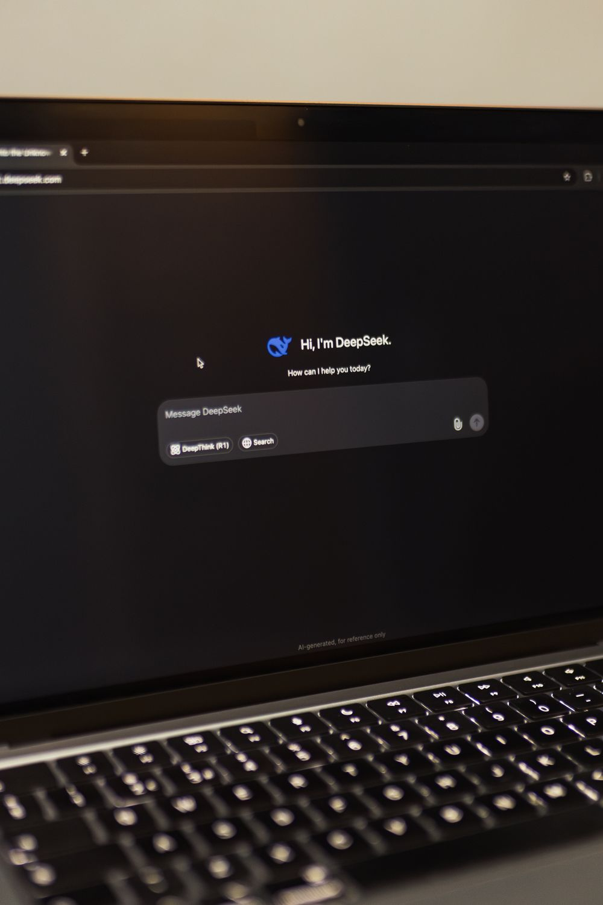

ChatGPT supera YouTube e Amazon: l'AI riscrive Google
Per la prima volta nella storia, ChatGPT diventa il termine più cercato su Google negli Stati Uniti, superando YouTube e Amazon. Con oltre 94 milioni di ricerche mensili, l'AI non è più una tecnologia di nicchia: è la nuova porta d'ingresso al web.
Il sorpasso che segna un'epoca
I numeri parlano chiaro: secondo i dati diffusi da Ahrefs a luglio 2026, la parola chiave "chatgpt" ha totalizzato 94,61 milioni di ricerche mensili negli Stati Uniti, superando YouTube (86,14 milioni) e Amazon (85,77 milioni). A livello mondiale, ChatGPT registra 841,9 milioni di ricerche mensili, più del doppio di YouTube (390,8 milioni). Se si aggiunge "chat gpt" (294,5 milioni), il totale supera 1,1 miliardi di ricerche mensili.

Crescita esponenziale: i numeri di ChatGPT
- 900 milioni di utenti settimanali attivi a febbraio 2026
- Oltre 1 miliardo di utenti mensili a maggio 2026
- 5,51 miliardi di visite mensili al sito web
- 2,5 miliardi di prompt elaborati ogni giorno
- 50 milioni di abbonati ai piani a pagamento
- 25 miliardi di dollari di revenue annualizzata
- 92% delle aziende Fortune 500 usa OpenAI
Verso l'IPO: la corsa al trilione
L'8 giugno 2026 OpenAI ha depositato il SEC filing per la sua IPO. Valutata 852 miliardi di dollari, punta a superare 1 trilione al debutto. Lead underwriters: Goldman Sachs e Morgan Stanley, debutto previsto settembre 2026.

Quote di mercato
La quota di ChatGPT sul traffico AI globale è scesa dal 76,4% al 52,7% in 12 mesi, mentre Gemini è passata all'8,9% al 27,3%. Tuttavia ChatGPT cresce in volume assoluto, passando da 400 a 900 milioni di utenti settimanali.
AI Search Revolution
Google AI Mode ha superato i 75 milioni di utenti giornalieri con un 93% di zero-click rate. I visitatori da ChatGPT registrano un 14,2% di tasso di conversione, contro il 2,8% del traffico organico.
L'editoria nel mirino
Uno studio (Agarwal & Sen, 2026) dimostra che AI Overviews riducono i click organici del 39,8%. I referral da Google sono calati del 33% a livello globale. Il CTR per la prima posizione organica è crollato del 55-62% sulle query con AI Overviews.